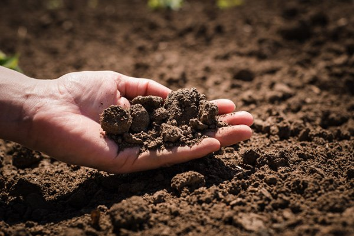

Soil Resources
Soil is essential for agriculture.Soil resources refer to the top layer of the Earth's surface, rich in minerals and organic matter, that supports plant life and plays a crucial role in agriculture and ecosystems.
Learn MoreExplore various types of land resources and their importance to our ecosystem.
Soil is essential for agriculture.Soil resources refer to the top layer of the Earth's surface, rich in minerals and organic matter, that supports plant life and plays a crucial role in agriculture and ecosystems.
Learn MoreWater is a vital resource that sustains life, drives agriculture, fuels industry, and supports ecosystems, making its conservation essential for our future.
Learn MoreForest resources provide essential benefits such as timber, fuel, medicine, and habitat, while playing a critical role in regulating climate and preserving biodiversity.
Learn MoreAgricultural land is land used for growing crops and raising livestock, essential for food production and supporting global economies.
Learn More
Energy resources are natural resources like coal, oil, natural gas, and renewables that are harnessed to generate power for industries, transportation, and daily life.
Learn More
Mountains are elevated landforms that shape climate, provide freshwater, support diverse ecosystems, and offer valuable resources such as minerals and timber.
Learn More